Parme (Duché) *
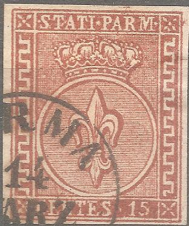


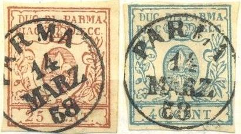
1859 - Inscriptions, type des timbre-taxe, couleur sur blanc:

Return To Catalogue - Oneglia forgeries, introduction, part 1 - Oneglia forgeries, introduction, part 2 - Panelli - Spiotti - Venturini
Note: on my website many of the
pictures can not be seen! They are of course present in the
catalogue;
contact me if you want to purchase it.
Erasmo Oneglia was an Italian forger in the late 19th century from Turin. He is famous for his engraved forgeries, but he also made photo-lithographed forgeries. Many of his forgeries were previously attributed to the forger Angelo Panelli. The engraved Oneglia forgeries are usually 'overinked'. When Oneglia applied a watermark on his forgeries, it is very clearly visible. His watermarks are impressed instead of being real watermarks. Oneglia also collaborated closely with A.Venturini and E.Spiotti. The exact relationships that these forgers had is not clear up to this day.
Oneglia forgeries, 1906 catalogue, "Naples et Sicile" to "Orange"
Parme (Duché) * |
|||
| Number | Year | Description | Price in Fr. |
| 1852 - Couronne, fleur de lis dans un cercle: | |||
| 1 | 1852 | 5 cent., noir sur jaune ................................................................................................................... | Fr. -.10 |
| 2 | 10 cent., noir sur blanc | Fr. -.10 | |
| 3 | 15 cent., noir sur rose | Fr. -.10 | |
| 4 | 25 cent., noir sur violet | Fr. -.10 | |
| 5 | 20 cent., noir sur blue (should have been 40 cent.,) | Fr. -.10 | |
| 1857: | |||
 |
|||
| 6 | 1857 | 5 cent., jaune sur blanc | Fr. -.20 |
| 7 | 15 cent., rouge sur blanc | Fr. -.20 | |
| 8 | 25 cent., brun sur blanc | Fr. -.20 | |
| 1857 Petit écusson, couleur sur blanc: | |||
|  |
|||
| 9 | 1857 | 15 cent., rouge | Fr. -.50 |
| 10 | 25 cent., brun | Fr. -.50 | |
| 11 | 40 cent., bleu | Fr. -.50 | |
| 1853-57 Taxe-fiscale, inscription noire sur couleur: | |||
|
|||
| 12 | 1853-57 | 6 cent., rose | Fr. -.40 |
| 13 | 9 cent., bleu | Fr. -.40 | |
| Gouvernement
Provisoire. 1859 - Inscriptions, type des timbre-taxe, couleur sur blanc: |
|||
| |
|||
| 14 | 1859 | 5 cent., vert | Fr. -.60 |
| 15 | 10 cent., brun | Fr. -.60 | |
| 16 | 20 cent., bleu | Fr. -.50 | |
| 17 | 40 cent., rouge | Fr. -.60 | |
| 18 | 18 cent., jaune (should have been 80 cent.,) | Fr. 1.-- | |
In the book 'Philatelic forgers, their Lives and Works' by
V.Tyler, a copied page of the 'Philatelisten Zeitung 18 page 100,
1905' is reproduced with a forged Oneglia "PARMA 14 MARZ
58" cancel. Apparently other cancels were also used by
Oneglia.
The distinguishing characteristics of these forgeries are:
First 1852 issue: Note the very strange "S" of
"STATI"
Second 1857 issue: there is a thick line of color connection the
top of the fleur de lis with the containing ellipse
Third 1859 issue: the genuine stamps have a missing top right
serif of the "I" of "STATI", this forgery has
a top right serif (many other forgeries also have this wrong
design by the way).
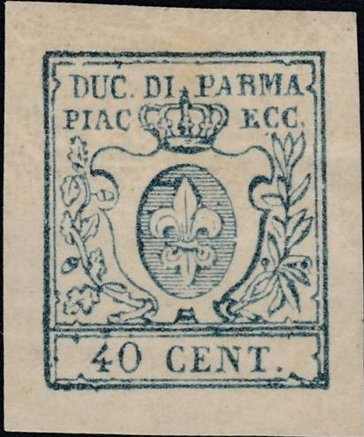
This forgery of the same type even looks like it is engraved.
Perse. N |
|||
| Number | Year | Description | Price in Fr. |
| 1 | 1882 | 5 et 10 fr.: la série de deux ........................................................................................................... | Fr. 1.20 |
Since these Persia forgeries are marked "N", they were not made by Oneglia, but by another forger (as mentioned in the foreword of his catalogue).
Prusse. N |
|||
| Number | Year | Description | Price in Fr. |
1856-61 - Envelopes ovales, inscription diagonale: |
|||
| 1 | 1856-61 | Série de 5 pieces...................................................................................................................... | Fr. 6.-- |
Since these Prussia forgeries are marked "N", they were not made by Oneglia, but by another forger (as mentioned in the foreword of his catalogue). I'm actually not entirely sure what is being offered here, are these the full envelopes, or just cuts of envelopes?
Philippines. N. |
|||
| Number | Year | Description | Price in Fr. |
1898 - Dent. 14: |
|||
| 1 | 1898 | 60-80 cent., 1 et 2 pesos. Série de 4 pièces.......................................................................................... | Fr. 10.-- |
Since these Philippines forgeries are marked "N", they were not made by Oneglia, but by another forger (as mentioned in the foreword of his catalogue).
Porto-Rico. N. |
|||
| Number | Year | Description | Price in Fr. |
1898 - Dent. 14: |
|||
| 1 | 1898 | 60-80 cent., 1 et 2 pesos. Série de 4 pièces.......................................................................................... | Fr. 10.-- |
Since these Porto Rico forgeries are marked "N", they were not made by Oneglia, but by another forger (as mentioned in the foreword of his catalogue). There are several, rather crude, forgeries of these stamps. I do not know which of these were offered by Oneglia here.
Perù. * |
|||
| Number | Year | Description | Price in Fr. |
1858 - Fond de lignes ondulées. Petite inscription: |
|||
| 1 | 1858 | 1/2 peso, jaune................................................................................................................................ | Fr. 2.-- |
| Erreur. | |||
| 2 | 1/2 peso, rose | Fr. 5.-- | |
Paraguay. * |
|||
| Number | Year | Description | Price in Fr. |
1870 - Armes: |
|||
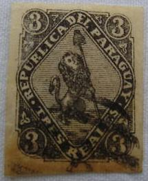 |
|||
| 1 | 1870 | 1 cent., rose..................................................................................................................................... | Fr. -.25 |
| 2 | 2 cent., bleu | Fr. -.75 | |
| 3 | 3 cent., noir | Fr. 1.-- | |
| 1878 - Timbres de 1870 surcharge verticale (grand chiffre): | |||
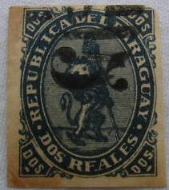 |
|||
| 4 | 1878 | 5 cent. sur 1 rose | Fr. 1.-- |
| 5 | 5 cent. sur 1 rose (surch. bleu) | Fr. 1.-- | |
| 6 | 5 cent. sur 1 bleu | Fr. 1.50 | |
| 7 | 5 cent. sur 2 bleu (surch. bleu) | Fr. 1.50 | |
| 8 | 5 cent. sur 3 noir | Fr. 2.-- | |
| 9 | 5 cent. sur 3 noir (surch. bleu) | Fr. 2.-- | |
| Surcharge verticale (petit chiffre): | |||
| 10 | 5 cent. sur 2 bleu | Fr. 1.-- | |
| 11 | 5 cent. sur 3 noir | Fr. 2.50 | |
| 12 | 5 cent. sur 3 noir (surch. bleu) | Fr. 2.50 | |
| Surcharge horizontale | |||
| 13 | 5 cent. sur 2 bleu | Fr. 2.50 | |
| 14 | 5 cent. sur 3 noir | Fr. 3.-- | |
| 15 | 5 cent. sur 3 noir (surch. bleu) | Fr. 3.-- | |
| La série de 15 pièces | Fr. 20.-- | ||
I believe the above Paraguay forgeries are made by Oneglia, since they have the typical bars with "G" cancel often used on Ongelia forgeries.
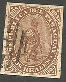
Pérak. * |
|||
| Number | Year | Description | Price in Fr. |
1878 - Timbres de
Malacca de 1868 surchargé |
|||
| 1 | 1878 | 2 cent. brun .................................................................................................................................. | Fr. 5.-- |
1880 - Timb. de Malacca 1868 C.C. surchargé PERAK: |
|||
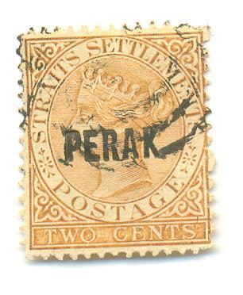 |
|||
| 2 | 1880 | 2 cent. brun | Fr. 1.-- |
1891 - Même genre, surcharge verticale. 2 Cents Perak: |
|||
| 3 | 1891 | 2 sur 4 cent, rose | Fr. 2.50 |
| 1890 - Id. Fil. C. A. dent. 14: | |||
| 4 | 1890 | 10 cent. ardesia | Fr. 1.25 |
| 5 | 12 cent. violet brun | Fr. 2.-- | |
| 6 | 12 cent. bleu C. C. | Fr. 2.-- | |
| 7 | 24 cent. vert C. A. | Fr. 1.50 | |
| 8 | 24 cent. vert C. C. | Fr. 3.-- | |
| La série de 8 pièces | Fr. 15.-- | ||
These are the forged Straits Settlements (Malacca) stamps with a forged overprint.
Patiala. |
|||
| Number | Year | Description | Price in Fr. |
| 1 | 1884 | 8 a violet ....................................................................................................................................... | Fr. 4.-- |
I presume this is the forged India stamp with a forged overprint. I have not been able to obtain an image.
Portugal. * |
|||
| Number | Year | Description | Price in Fr. |
1866 - C.W. au dessous du cou, relief: |
|||
| 1 | 1866 | Série de 8 diff................................................................................................................................ | Fr. 2.-- |
1867 - Id. dent 12 1/2: : |
|||
| 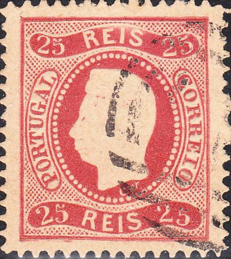 |
|||
| 2 | 1867 | Série de 9 diff. | Fr. 2.50 |
In the above forgeries, the "G" of
"PORTUGAL" is almost closed and the embossed head
different. They are printed on very yellowish paper. In my
opinion, they are Oneglia forgeries, since they have the typical
bars and "1" cancel (on top of another cancel?).
The same forged stamps were used for forged Madeira overprints.
Romagne.
* |
|||
| Number | Year | Description | Price in Fr. |
1854 - Chiffre noir sur couleur |
|||
| 1 | 1854 | 1/2 baiocco, jaune ......................................................................................................................... | Fr. 0.20 |
| 2 | 1 baiocco, gris | Fr. 0.20 | |
| 3 | 2 baiocchi, jaune foncé | Fr. 0.20 | |
| 4 | 3 baiocchi, vert foncé | Fr. 0.20 | |
| 5 | 4 baiocchi, fauve | Fr. 0.40 | |
| 6 | 4 baiocchi, violet (this should have been 5 baiocchi?) | Fr. 0.40 | |
| 7 | 6 baiocchi, vert | Fr. 0.40 | |
| 8 | 8 baiocchi, rose | Fr. 0.40 | |
| 9 | 20 baiocchi, bleu clair | Fr. 0.50 | |
| La série de 9 pièces | Fr. 2.50 | ||
There are many forgery types of Romagne, I have not been able to figure out which one was made by Oneglia. Since Oneglia states in the introduction of his catalogue that he only sells cancelled forgeries, it should be expected that his Romagne forgeries are also cancelled. He might have pasted his forgeries on small cuts of letters (as he often did with other Italian states); although I have never seen such cuts.....
Roumélie Orientale. |
|||
| Number | Year | Description | Price in Fr. |
1865 - Timbres vrais. |
|||
| 1 | 1865 | 5 p. violet ..................................................................................................................................... | Fr. 0.30 |
Roumanie. * |
|||
| Number | Year | Description | Price in Fr. |
1865 - Effigie du Prince Couza: |
|||
| 1 | 1865 | 2 par., jaune..................................................................................................................................... | Fr. -.30 |
| 2 | 2 par., orange | Fr. -.30 | |
| 3 | 5 par., bleu | Fr. -.20 | |
| Les mêmes, papier vergé: | |||
| 4 | 2 par., orange | Fr. -.30 | |
| 5 | 5 par., bleu | Fr. -.30 | |
| 1869 - Effigie du Prince Charles de Hohenzollern: | |||
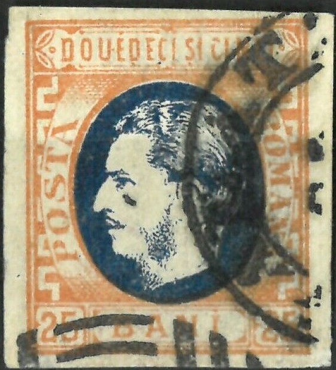 Judging from the cancel at the bottom, this is an Oneglia forgery |
|||
| 6 | 1869 | 5 bani, jaune | Fr. -.20 |
| 7 | 5 bani, orange | Fr. -.20 | |
| 8 | 10 bani, bleu-ciel | Fr. -.20 | |
| 9 | 10 bani, bleu-terre | Fr. -.20 | |
| 10 | 15 bani, rouge | Fr. -.20 | |
| 11 | 15 bani, carmin | Fr. -.20 | |
| 12 | 25 bani, bleu et jaune | Fr. -.30 | |
| 13 | 50 bani, rouge et bleu | Fr. -.30 | |
1871 - Même effigie avec barbe: |
|||
| 14 | 1871 | 5 bani, rouge | Fr. -.20 |
| 15 | 5 bani, carmin | Fr. -.20 | |
| 16 | 10 bani, jaune | Fr. -.20 | |
| 17 | 10 bani, jaune (papier vergé) | Fr. -.50 | |
| 18 | 10 bani, bleu | Fr. -.20 | |
| 19 | 15 bani, rouge | Fr. -.40 | |
| 29 | 25 bani, brun | Fr. -.20 | |
| 1872 - Même type, impression défectueuse: | |||
| 21 | 1872 | 10 bani, bleu | Fr. -.30 |
| 22 | 10 bani, bleu (papier vergé) | Fr. -.50 | |
| 23 | 50 bani, rouge et bleu | Fr. -.50 | |
| 1872 - Même type, dentelés: | |||
| 24 | 1872 | 5 bani, rouge | Fr. -.50 |
| 25 | 5 bani, carmin | Fr. -.20 | |
| 26 | 10 bani, bleu | Fr. -.20 | |
| 27 | 25 bani, brun | Fr. -.20 | |
1876 - Nouveau type, impression défectueuse - erreur: |
|||
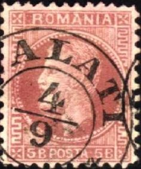 5 bani rose misprint. The cancel is very clearly done (as in other Oneglia forgeries), see comment A) |
|||
| 28 | 1876 | 5 bani, bleu | Fr. -.50 |
| 1879: | |||
| 29 | 1879 | 5 bani, rose | Fr. -.50 |
| 30 | 1858 | 5, 40 et 80 série | Fr. 7.50 |
| 31 | 1862 | Série de 4 pièces | Fr. 2.50 |
A) The forged cancel "GALATI 4/9" was also used by Fournier. However, it is of a different type.
Réunion. N |
|||
| Number | Year | Description | Price in Fr. |
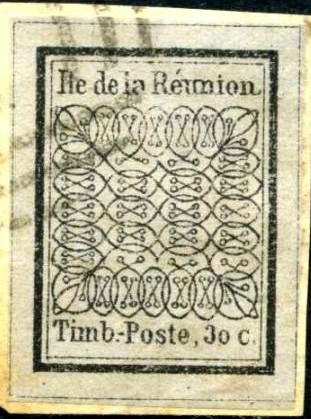 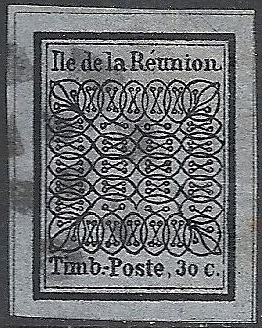 |
|||
| 1 | 1852 | 15 cent.......................................................................................................................................... | Fr. -.20 |
| 2 | 1852 | 30 cent. | Fr. -.20 |
Since these Reunion forgeries are marked "N", they
were not made by Oneglia, but by another forger (as mentioned in
the foreword of his catalogue).
Even though it was made by another forger, this forgery still
appears to have the bars with "1" cancel. Oneglia might
have applied it since he only sold cancelled stamps (which he
says in his the introduction of his catalogue). The second 30 c
forgery has a cancel with a circle consisting of squares, which
can also be found on his forgeries of Nevis.
Sainte Hélène. * |
|||
| Number | Year | Description | Price in Fr. |
1856 - Effigie de Victoria avec filigrane et couronne (gravure en cuivre): |
|||
| 1 | 1856 | 6 pence, bleu .................................................................................................................................. | Fr. -.30 |
| 2 | 6 pence, carmin | Fr. -.30 | |
| 1862 - Idem, dentelé: | |||
|
|
|||
| 3 | 1862 | 6 pence, bleu | Fr. -.30 |
| 1863 - Idem, avec valeur en surcharge noir, trait court, dentelé: | |||
|
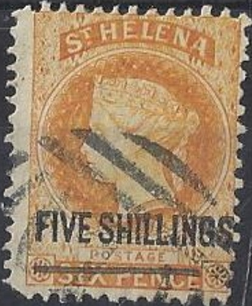 |
|||
| 4 | 1863 | 1 penny, carmin | Fr. -.30 |
| 5 | 2 pence, jaune | Fr. -.30 | |
| 6 | 3 pence, violet | Fr. -.30 | |
| 7 | 4 pence, rose vif | Fr. -.30 | |
| 8 | 1 shilling, vert | Fr. -.30 | |
| 9 | 5 shlling, orange | Fr. -.30 | |
| Idem, trait long: | |||
| 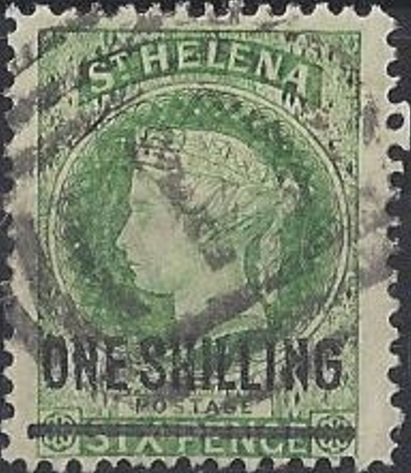 Long black lines |
|||
| 10 | 1 penny, carmin | Fr. -.30 | |
| 11 | 2 pence, jaune | Fr. -.30 | |
| 12 | 3 pence, violet | Fr. -.30 | |
| 13 | 4 pence, carmin | Fr. -.30 | |
| 14 | 1 shilling, vert | Fr. -.30 | |
| 1873 - Type de 1856: | |||
| 15 | 1873 | 6 pence, bleu-ciel | Fr. -.30 |
| 16 | 6 pence, bleu gris | Fr. -.30 | |

6 p with the forged watermark at the back.
Schleswig-Holstein. * |
|||
| Number | Year | Description | Price in Fr. |
1880 - Armes en relief fil de soie: (the year should have been 1850?) |
|||
| 1 | 1850 | 1 schil., bleu .................................................................................................................................. | Fr. 1.-- |
| 2 | 2 schil. rose | Fr. 1.-- | |
Sainte Lucie. * |
|||
| Number | Year | Description | Price in Fr. |
1859 - Effigie de Victoria, filigrane, dentelé (gravure en cuivre): |
|||
|
|||
| 1 | 1859 | Sans valeur, 1 p., rouge ................................................................................................ | Fr. -.30 |
| 2 | Sans valeur, 4 p., bleu | Fr. -.30 | |
| 3 | Sans valeur, 6 p., vert | Fr. -.30 | |
| 1863 - Meme type, filigrane C. C. et couronne, dentelés: | |||
| 4 | 1863 | Sans valeur, 1 p., carmin | Fr. -.30 |
| 5 | Sans valeur, 4 p., bleu gris | Fr. -.30 | |
| 6 | Sans valeur, 6 p., violet | Fr. -.30 | |
| 1874 - Idem: | |||
| |
|||
| 7 | 1874 | Sans valeur, 1 p., noir | Fr. -.30 |
| 8 | Sans valeur, 4 p., jaune | Fr. -.30 | |
| 9 | Sans valeur, 6 p., violet | Fr. -.30 | |
| 10 | Sans valeur, 1 sh., orange vif | Fr. -.30 | |
| 1881-82 - Meme type avec
nouvelle valeur en surcharge noir, filigrance C. C. et couronne, dentelés: |
|||
 |
|||
| 11 | 1/2 penny, vert | Fr. -.30 | |
| 12 | 1 penny, noir | Fr. -.30 | |
| 13 | 2 1/2 pence, vermillon | Fr. -.30 | |
| 1882-86 - Meme type et surcharge, filigrance C. A. et couronne, dentelés: | |||
|
|
|||
| 14 | 1/2 penny, vert | Fr. -.30 | |
| 15 | 1 penny, noir | Fr. -.30 | |
| 16 | 4 pence, jaune | Fr. -.30 | |
| 17 | 6 pence, violet | Fr. -.30 | |
| 18 | 1 shilling, orange | Fr. -.30 | |


With impressed watermark.

These St.Lucia forgeries even exist with inverted overprints,
here with inverted "HALFPENNY"
A mysterious item, with the circular cancel consisting of squares, a similar forgery of St.Lucia is shown in the book 'The Oneglia Engraved Forgeries' by Robson Lowe & Carl Walske (1996) in the appendix on page 98:

Mysterious item: Some early trial from Oneglia? It could be
engraved.
Saint-Marin. * (San Marino) |
|||
| Number | Year | Description | Price in Fr. |
| |
|||
| 1 | 1877-90 | 10 cent., bleu................................................................................................................ | Fr. -.50 |
| 2 | 20 cent., rouge | Fr. -.10 | |
| 3 | 30 cent., brun | Fr. 1.-- | |
| 4 | 40 cent., violet | Fr. -.80 | |
| 1892 - Timbres, vrais, surcharge imitée: | |||
| 5 | 1892 | 10 sur 20 cent., rouge | Fr. 2.-- |
| 6 | 10 sur 20 cent., rouge | Fr. 2.-- | |
1892 - Timbres et surcharge imités: |
|||
| 7 | 1892 | 10 sur 20 cent., rouge | Fr. -.50 |
| 8 | 10 sur 20 cent., rouge grand surch. | Fr. -.50 | |
|
|||
| 9 | 1892-1894 | 1 lire, rouge et jaune | Fr. 1.20 |
| 10 | 1895-1899 | 1 lire, bleu | Fr. -.80 |
| 1892 - Timbres précedents surchargés: | |||
| 11 | 5 sur 10 cent., bleu | Fr. -.50 | |
| 12 | 5 sur 30 cent., brun | Fr. 1.-- | |
The Serrane guide says:
Mauvaise série de Gênes (I.). Dentelés 11 1/2; sans
filigrane ou avec faux filigrane par impression de corps gras
gris- jaunâtre. Nuances criardes; quelques lettres des
inscriptions touchent les traits fins (EP de REP, en bas; E de
POSTALE, en haut; R de LIBERTAS, en bas); les lettres TAL sont
reliées par le bas, etc. Le faux filigrane mis dans la benzine
disparaît à la vue. Papier épais 70 à 75 nie. Fausse
oblitération carré de gros points.
I presume the forger I is Nino Imperato from Genoa. Imperato is
known to have sold forgeries made by Oneglia. Thus the above
described forgeries of the Serrane guide are presumably the same
that Oneglia made. Also in view of the fact that these are the
only forgery type besides Fournier that I'm aware of.
Saint Pierre et Miquelon. * |
|||
| Number | Year | Description | Price in Fr. |
1885-91 - Timbres des
Colonies françaises, surcharge S. P. M. et valeur |
|||
| 1 | 1885-91 | 5 sur 2 cent., brun ..................................................................................................................... | Fr. 2.-- |
| 2 | 5 sur 4 cent., violet | Fr. -.50 | |
| Surcharge renversée | |||
| 3 | 5 sur 2 cent., brun | Fr. 2.-- | |
| 4 | 5 sur 4 cent., violet | Fr. 2.-- | |
| Erreur. | |||
| 5 | 5 sur 2 cent., brun (lettre S. P. recouvrant la lettre M. ) | Fr. 3.-- | |
| 6 | 5 sur 2 cent., brun (2 au recto et S. P. M. au verso) | Fr. 3.-- | |
| Timber de 1877 | |||
| 7 | 25 sur 1 fr. olive | Fr. 1.50 | |
| Erreur | |||
| 8 | 25 sur 1 fr. (S. P. M. en haut) | Fr. 2.-- | |
| 9 | 25 sur 1 fr. (surcharge de bas en haut) | Fr. 2.-- | |
| 10 | 25 sur 1 fr. (surcharge de haut en bas) | Fr. 2.-- | |
| 11 | 25 sur 1 fr. (surcharge renversèe) | Fr. 2.-- | |
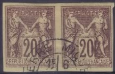
Samoa. N |
|||
| Number | Year | Description | Price in Fr. |
| 1 | 1877-82 | Série de 8, par série................................................................................................................. | Fr. 2.-- |
Since these Samoa forgeries are marked "N", they
were not made by Oneglia, but by another forger (as mentioned in
the foreword of his catalogue).
The Samoa set was also offered in Oneglia's 1899 price list, but
not yet in his 1898 price list. I'm not sure if Oneglia sold one
of the forgery sets, or did he perhaps sell the reprints?
Saxe. * |
|||
| Number | Year | Description | Price in Fr. |
Engraved forgery, possibly by Oneglia. |
|||
| 1 | 1856 | 5 negr., rouge .............................................................................................................................. | Fr. 0.50 |
| 2 | 10 negr., bleu | Fr. 2.-- | |
| 1850 - Chiffre | |||
 |
|||
| 3 | 1850 | 3 pfen., rouge | Fr. 2.-- |
Serbie. * |
|||
| Number | Year | Description | Price in Fr. |
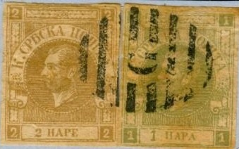 |
|||
| 1 | 1866 | 1 p., vert, dentelé..................................................................................................................... | Fr. -.20 |
| 2 | 2 p., brun dentelé | Fr. -.20 | |
| 3 | 1868 | 1 p., vert | Fr. -.20 |
| 4 | 2 p., brun | Fr. -.20 | |
| 1866 - Papier colorié par l'impression d'une teinte de fond (la verso est blanc): | |||
| 5 | 1 para, vert sur rose | Fr. 1.50 | |
| 6 | 2 para, olive sur rose | Fr. 1.50 | |
| 7 | 2 para, violet sur lilas | Fr. 1.50 | |
| Erreurs. | |||
| 8 | 2 para, vert sur rose | Fr. 1.-- | |
| 9 | 1 para, vert sur rose (le verso est colorié) | Fr. 1.-- | |
Since the above pair of Serbia forgeries have a bars with "G" cancel, I'm convinced this was a forgery made by Oneglia (even though it was described as a 'Geneva' forgery).
Sicile. * |
|||
| Number | Year | Description | Price in Fr. |
| 1859 - Effigie à gauche (Ferdinand II), gravure en cuivre: | |||
| 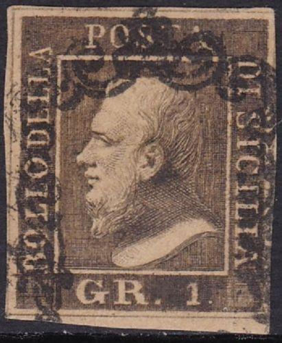 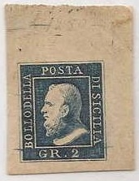 |
|||
| 1 | 1859 | 1/2 gr., orange.................................................................................................................................. | Fr. -.50 |
| 2 | 1 gr., vert-bistre | Fr. -.30 | |
| 3 | 1 gr., vert-olive | Fr. -.30 | |
| 4 | 2 gr., blue-foncé | Fr. -.10 | |
| 5 | 2 gr., blue | Fr. -.10 | |
| 6 | 5 gr.. rouge | Fr. -.50 | |
| 7 | 5 gr.,carmin | Fr. -.60 | |
| 8 | 10 gr., blue-foncé | Fr. -.50 | |
| 9 | 20 gr., violet noir | Fr. -.50 | |
| 10 | 50 gr., brun-rouge | Fr. 1.-- | |
| Idem. | |||
| 11 | 50 gr., brun-rouge | Fr. 2.50 | |
I presume Nr.11 is an improved version of the 50 gr value. The
work 'The Oneglia Engraved Forgeries by Robson Lowe & Carl
Walske (1996) shows different improved versions of these
forgeries.
The 5 gr seems to have been made by erasing the "0"
from a 50 gr forgery. Therefore the "5" is placed too
far to the left when compared to a genuine stamp.
Sourout. N (Soruth) |
|||
| Number | Year | Description | Price in Fr. |
| 1 | Série de 5 pieces ............................................................................................................................ | Fr. 2.50 | |
Since these Soruth forgeries are marked "N", they were not made by Oneglia, but by another forger (as mentioned in the foreword of his catalogue).
Shanghai. N |
|||
| Number | Year | Description | Price in Fr. |
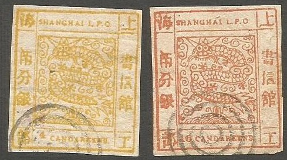 |
|||
| 1 | 1856-66 | Les 10 premières, toutes differentes, la série.................................................................................. | Fr. 1.50 |
Since these Shanghai forgeries are marked "N", they
were not made by Oneglia, but by another forger (as mentioned in
the foreword of his catalogue).
I think the above shown forgeries are those sold by Oneglia,
since they have the 4-ring cancel that can be found on other
forgeries sold or made by Oneglia.
Soudan Français. * |
|||
| Number | Year | Description | Price in Fr. |
| 1894 - Timbres des Colonies Françaises avec SOUDAN FRANÇAIS et valeur en surcharge. | |||
Timbres de 1877: |
|||
| 1 | 1894 | 0,15 sur 75 cent., carmin ................................................................................................................ | Fr. 3.-- |
| Timbres de 1881: | |||
| 2 | 1894 | 0,15 sur 75 cent., carmin | Fr. 2.-- |
| 3 | 0,15 sur 1 franc, olive | Fr. 2.-- | |
I do not think the 1877 stamps were ever used with a "0,15" overprint. The 1 F was overprinted with "0,25" (not "0,15"!).
Suisse. |
|||
| Number | Year | Description | Price in Fr. |
| ZURICH - 1843: | |||
| 1 | 1843 | 4 Rap., chiffre noir............................................................................................................................. | Fr. 1.-- |
| 2 | 6 Rap., chiffre noir | Fr. 1.-- | |
| 3 | 1849 | Idem - 1849 1 1/2 Rap., oblong | Fr. 1.-- |
| BALE - 1845 - Colombe en relief: | |||
| 4 | 1845 | 2 1/2 Rap., rouge bleu | Fr. 1.-- |
| GENÈVE 1843 - Armes petites, format: | |||
| 5 | 1843 | 5 x 5, noir sur vert | Fr. 1.-- |
| Idem - la moitié du précédent: | |||
Oneglia-Venturini forgery. See comments below in 1). |
|||
| 6 | 5 noir sur vert | Fr. 1.-- | |
| Idem - 1847 - Mêmes armes, port cantonal: | |||
| 7 | 1847 | 5 noir sur vert | Fr. 1.-- |
| 8 | 5 noir sur vert jaune | Fr. 1.-- | |
| 9 | 5 noir sur vert foncé | Fr. 1.-- | |
| Idem - 1849 - Envelopes coupées: | |||
| 10 | 1849 | 5 cent., vert sur blanc | Fr. 1.-- |
| Idem - Croix -cor de chasse, oblong: | |||
| 11 | 4 cent., noir et rouge | Fr. 1.-- | |
| Idem - 1850 - Mêmre type: | |||
| 12 | 1850 | 5 cent., noir et rouge | Fr. 1.-- |
| Idem 1851 - Croix blanche sur fond rouge: | |||
| 13 | 1851 | 5 cent., noir et rouge | Fr. 1.-- |
| Idem - 1850: | |||
| 14 | 1850 | 2 1/2 Rap., Post local | Fr. 1.-- |
| 15 | 2 1/2 Rap., Orts post | Fr. 1.-- | |
| Idem - 1851: | |||
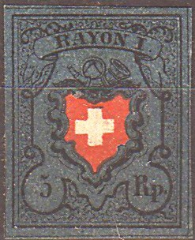 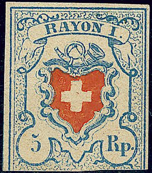 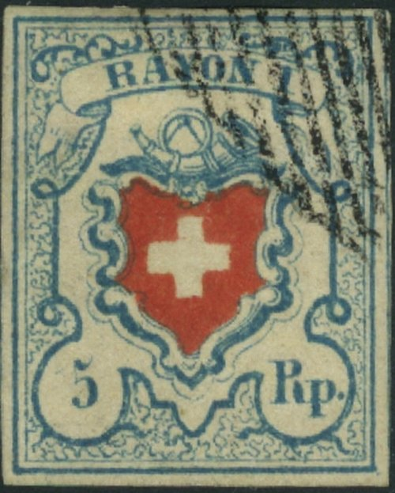 I've been told that these forgeries were made by the forger Venturini, who possibly obtained them from Oneglia |
|||
| 16 | 1851 | 5 Rap., bleu et rouge | Fr. 1.-- |
| 17 | 10 rap., orange, bleu et rouge | Fr. 1.-- | |
| Idem - 1851: | |||
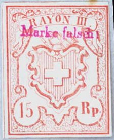 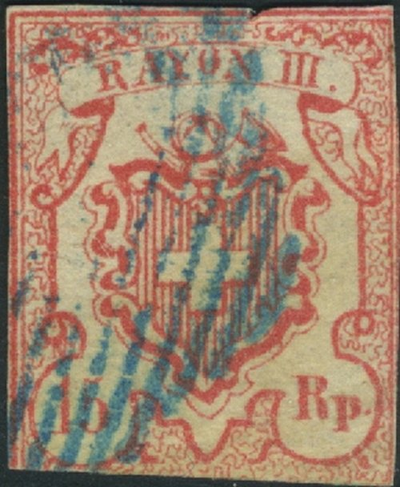 These forgeries are said to have been made by Panelli, who most likely got them from Oneglia |
|||
| 18 | 1852 | 15 Rap. (gr. ch.), rouge | Fr. 1.-- |
| 19 | 15 Rap. (pet. ch.), rouge | Fr. 1.-- | |
| 20 | 15 cent. (pet. ch.) rouge | Fr. 1.-- | |
| 21 | 15 cent. (gr. ch.), rouge | Fr. 1.-- | |
| 1843-51 - Facsimiles des timbres cantonaux, | |||
| série de 15 timbres (see image below) | Fr. .1.50 | ||
| Mes timbres Suisses sont une nouvelle émission, on ne doit pas les confondre donc avec les vieux fac-similes. | |||
| 22 | 1852 | Crois blanche dans un écusson de 15 cent., rouge | Fr. 1.-- |
The book 'Philatelic Forgers, their Lives and Works' by V. E.
Tyler mentions that A. de Reuterskiold identified a number of
photo-lithographic forgeries by Oneglia-Venturini: 'A. De
Reuterskiold, The Philatelic Record 29, pages
59, 60, 111, 198 (1907). There are no photos in this work though.
Also, the text given there is : "Photo-lithographic forgery
by Oneglia-Venturini, of Turin; very dangerous and differing from
the original only in few details, which I do not think expedient
to disclose here.", or similar not very helpful text.....
1) The Geneva forgery shown above was identified by the Verband
Schweizerischer Philatelisten-Vereine (VSPhV) as a lithgraphed
Oneglia-Venturini from Turin (see
https://www.vsphv.ch/wp-content/uploads/2014/05/dg_38.pdf). I am
not certain if this was actually the forgery offered in this
pricelist, since it is very well done compared to his other
forgieres, or if this was a later improved forgery perhaps which
the pair Oneglia-Venturini made?
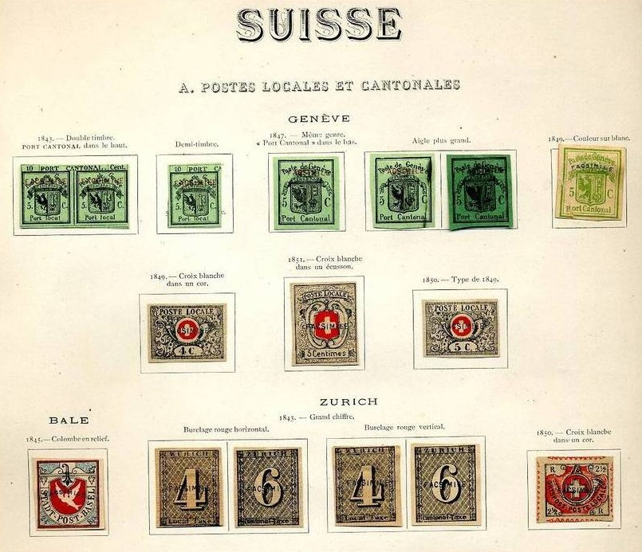
Siam. * |
|||
| Number | Year | Description | Price in Fr. |
| 1885 - Timbres de Siam de 1883, vrai, avec << 1 Tical >> en surcharge rouge imitation. Tip. 1, 2, ou 3: | |||
| 1 | 1885 | 1 Tical sur 1 lot. bleu ....................................................................................................................... | Fr. 3.-- |
| 1883 - Dent., grav. en cuivre: | |||
| 2 | 1883 | 1 lot. bleu, 1 att. carm., 1 pyn. verm | Fr. 1.-- |
| 1885 - T. de 1883 avec 3 types de surcharges rouge: | |||
| 3 | 1885 | 1 Tical sur 1 lot. bleu; les 3 types | Fr. 5.-- |
Selangor. * |
|||
| Number | Year | Description | Price in Fr. |
| 1881 - Timbres de Malacca surchargé avec un oval C. S. | |||
| 1 | 1881 | 2 cent., brun C. C. (rouge) ............................................................................................................. | Fr. 5.-- |
| 2 | 2 cent., brun C. A. | Fr. 5.-- | |
| 3 | 2 cent., brun C. A. (gr. S surch.) | Fr. 5.-- | |
| 1892 - avec SELANGOR: | |||
| 4 | 1892 | 2 cent., brun C. C. | Fr. -.50 |
| 5 | 2 cent., brun C. A. | Fr. -.80 | |
| 1891 - avec SELANGOR TWO CENTS 4 diff. surcharge: | |||
| 6 | 1891 | sur 24 cent., la série | Fr. 5.-- |
| La série de 9 pieces | Fr. 20.-- | ||
I presume the same forged Straits Settlements stamps were used for these overprints (such as for example the forgery of Perak), although the next stamp appear to be genuine with a forged overpint:
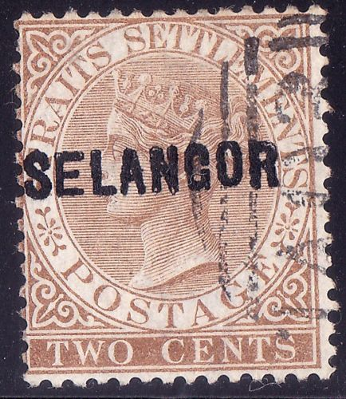
Highly suspicious "SELANGOR" overprint with a
"A03" overprint that looks pretty similar to the ones
on the Oneglia British Guiana forgeries.
Suède. * |
|||
| Number | Year | Description | Price in Fr. |
| 1855 - Armes dentelées: | |||
| 1 | 1855 | 3 shill., vert..................................................................................................................................... | Fr. 1.50 |
| 2 | 3 shill., vert bleu | Fr. 1.50 | |
| 3 | 6 shill. gris | Fr. 1.-- | |
| 4 | 6 shill, gris lilas | Fr. 1.-- | |
| 5 | 24 shill., rouge | Fr. 2.-- | |
| 1872 - Dent. 12 1/2. - Erreur | |||
TRETIO, au lieu de TSUGO. |
|||
| 6 | 1872 | 20 ore, rouge | Fr. 20.-- |
| Dent. 14. | |||
| 7 | 6 ore, gris | Fr. -.20 | |
| Dent. 12. | |||
| 8 | 7 ore, violet | Fr. -.20 | |
Sungei-Ujong. * |
|||
| Number | Year | Description | Price in Fr. |
| 1880 - T. Inde Angl. avec surch. ovale C * S. U. | |||
| 1 | 1880 | 1/2 a., bleu ................................................................................................................................... | Fr. 5.-- |
| 1880 - T. de Malacca 1868 fil. C. C. avec le même surch | |||
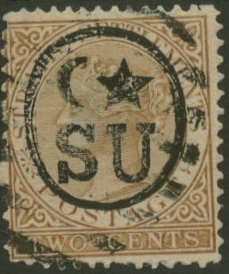 |
|||
| 2 | 1880 | 2 cent., brun | Fr. 5.-- |
| 1881 - T. de Malacca 1868 avec S. U. en surch. | |||
| 3 | 1881 | 2 cent., brun | Fr. 3.-- |
| Id. Id. avec Sungei-Ujong en surch. | |||
| 4 | 2 cent., brun | Fr. -.50 | |
| 5 | 4 cent., rose | Fr. 3.-- | |
| 1883 -88 - Id. T. Malacca 1868 fil C. A. avec la même surch. | |||
| 6 | 1883-88 | 4 cent., brun | Fr. 1.50 |
| 7 | 8 cent., orang | Fr. 5.-- | |
| 8 | 10 cent., ardoise | Fr. 5.-- | |
| 9 | Two cent sur 24 vert | Fr. -.50 | |
| 10 | Two cent sur 24 vert | Fr. 1.-- | |
| 11 | Two cent sur 24 vert | Fr. 1.-- | |
| 12 | Two cent sur 24 vert | Fr. 1.50 | |
| ...................4 diff. types. | |||
I think the above S.U. forgery has a bars with "G" cancel. Note, however, that similar genuine Sungei Ujong bar cancels exist.
Oneglia forgeries, 1906 catalogue, "Saint-Vincent" to "Terre-Neuve"


{kind=link}
{kind=link}
{kind=link}
{kind=link}
{kind=link}
{kind=link}
{kind=link}
{kind=link}
{kind=link}
{kind=link}
{kind=link}
{kind=link}
{kind=link}
{kind=link}
{kind=link}
{kind=link}
{kind=link}
{kind=link}
{kind=link}
{kind=link}
{kind=link}